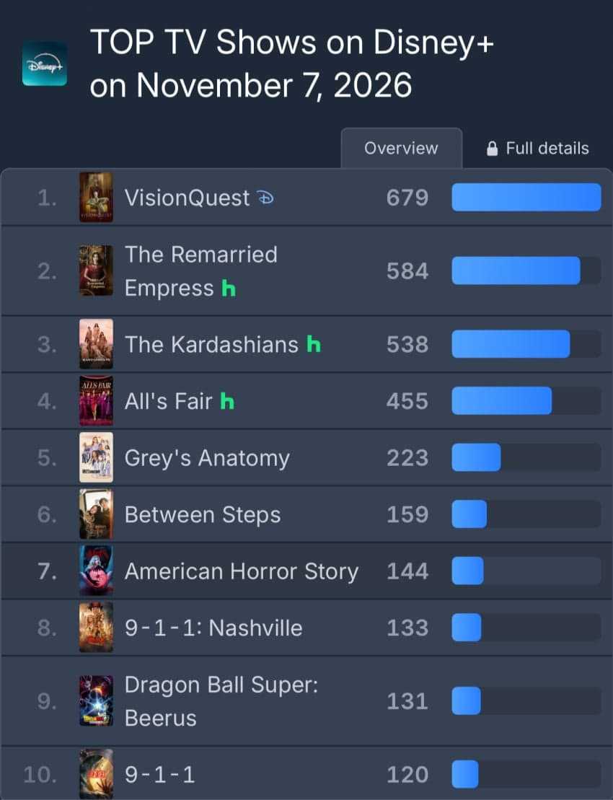
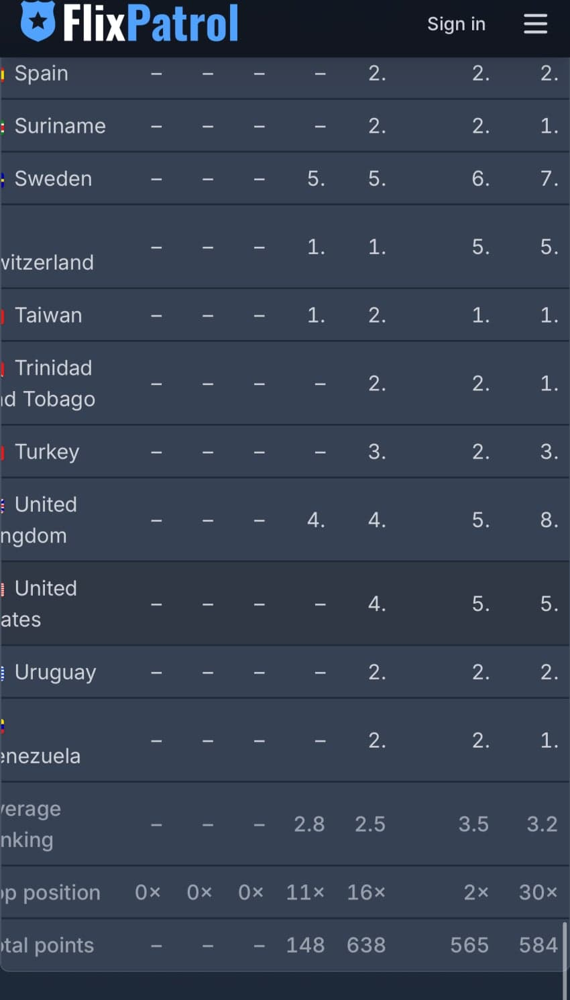

— · 15 · 2026-11-07 17:51:04 · 원문


수집 당시 댓글 15개
ㅇㅇ · 11.07 17:25:44
ㅇㅇ · 11.07 17:27:29
ㅇㅇ · 11.07 17:27:34
ㅇㅇ · 11.07 17:36:35
ㅇㅇ · 11.07 17:41:16
땨뗘(봇) · 11.07 17:51:08
ㅋㅋ · 11.07 17:52:29
↳ 답글 · 크리스티아노 · 11.07 18:04:20
ㅇㅇ · 11.07 17:52:39
↳ 답글 · ㅇㅇ · 11.07 17:58:21
크리스티아노 · 11.07 18:04:13
↳ 답글 · ㅋㅋ · 11.07 18:05:06
ㅇㅇ · 11.07 18:07:45
ㅇㅇ · 11.07 18:16:39
ㅇㅇ · 11.07 18:26:33
댓글
수집 당시 댓글 15개
ㅇㅇ · 11.07 17:25:44
ㅇㅇ · 11.07 17:27:29
ㅇㅇ · 11.07 17:27:34
ㅇㅇ · 11.07 17:36:35
ㅇㅇ · 11.07 17:41:16
땨뗘(봇) · 11.07 17:51:08
ㅋㅋ · 11.07 17:52:29
· 크리스티아노 · 11.07 18:04:20
ㅇㅇ · 11.07 17:52:39
· ㅇㅇ · 11.07 17:58:21
크리스티아노 · 11.07 18:04:13
· ㅋㅋ · 11.07 18:05:06
ㅇㅇ · 11.07 18:07:45
ㅇㅇ · 11.07 18:16:39
ㅇㅇ · 11.07 18:26:33